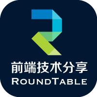

所有的技术分享目的无非有二：对外输出、自身沉淀
美团金融前端团队是一支年轻的团队，我们希望能在业务之余做一些技术分享，于内促进团队技术交流，于外希望能对业界同行有些许启发。
技术分享该以什么样的形式存在才能既保证分享的质量和可持续性，又能保证受众最大化吸收，一直是我们团队在摸索的问题，也许现在这种形式也不是最完善的。
但 Done Is Better Than Perfect，我们一直在努力。